DualQuant：从权重双尺度优化到无校准联合量化
论文：DualQuant: Dual-Scale Calibration-Free Weight-and-Activation Quantization for LLMs。作者 Mahsa Salmani、Sayeh Sharify、Hesham Mostafa，第一作者机构 d-Matrix。公开版本为 2026 年 10 月 9 日的 v1，阅读核验日期为 2026 年 10 月 14 日。论文入口：arXiv:2610.13767。代码入口：DualQuant。以下数字来自论文正文与附录，是作者报告结果，未独立运行复现实验。
1. 背景和问题
低位宽推理要同时压缩权重和激活才能充分利用加速器，但激活量化明显更困难，并且通常依赖校准数据。这句话对应论文摘要与引言的出发点。模型参数从半精度变成四位整数之后，权重存储可以显著缩小，可是若矩阵乘法的另一端仍然使用半精度激活，硬件的四位计算优势就不能完整兑现。联合量化因此既是精度问题，也是让模型真正进入低精度计算路径的系统条件。作者关注训练结束后的静态模型，希望不重新训练、不读取任何代表性文本样本，也不采集激活统计，就产生可用的四位权重和激活推理方案。
激活困难来自通道结构。某些输入通道会反复出现大幅度数值，共享量化尺度被这些离群值拉大后，同一组里的普通值只剩很少有效量化等级。按元素截断可能损伤真正有用的信号，扩大整个分组的范围又会让大多数值承受更粗的网格。权重具有相似的行列不均衡，但权重在部署前已经确定，可以反复读取和计算；激活则依赖实际请求、层位置和输入分布。两者能够取得的信息不同，决定了没有校准数据时，不能直接优化实际层输出对量化前后的偏差。这也是论文必须使用权重重建误差作为可观测目标的原因。
校准方法用数据弥补这一信息缺口。SmoothQuant 收集每通道激活统计，将量化负担在输入与权重之间迁移；AWQ 根据激活保护重要权重通道；一些旋转方法进一步学习变换矩阵，使异常能量在更多维度之间分散。它们可以很好地保持精度，但校准集的获取和代表性会影响结果。端侧私有模型、数据不能离开设备的场景，以及频繁发布新权重版本的流程，都可能难以提供相应样本。无校准不是省去一个配置参数，而是约束方法只能用已有权重构造离线变换，再在实际推理时动态量化输入。
已有无校准策略也不自动解决这一点。直接四舍五入只处理局部量化网格；HQQ、QuantEase 等方法集中优化权重；SINQ 通过行列尺度使矩阵更加均衡，但优化的是不均衡度这个代理指标。均衡矩阵有利于量化的直觉并不等价于重建误差最小，而且一组看似合理的连续尺度可能无法被实际块格式的共享尺度表示。QuaRot 的旋转无需校准，但它在指定块格式下重新分布数值之后，是否仍处于合适的动态范围，也需要单独验证。DualQuant 选择保留双尺度的表示能力，改为直接优化权重均方重建误差，并将可表示尺度集合纳入每次更新。
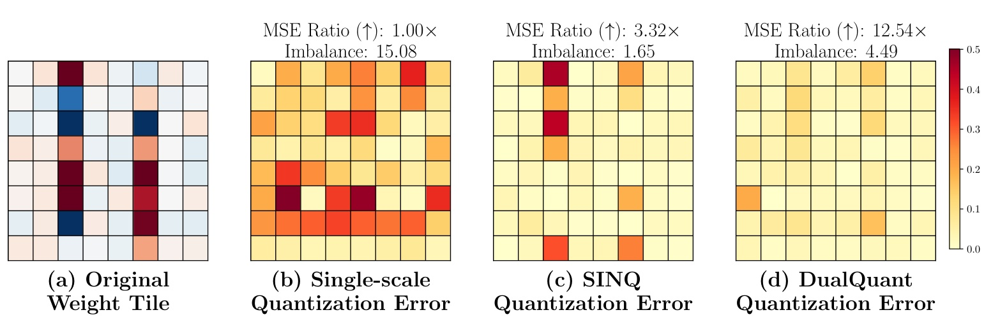
图一左侧展示原始权重小块，后面三个面板比较单尺度、SINQ 与 DualQuant 的绝对重建误差。颜色较深的格子表示更大误差，行列中集中出现的大数会扩大共享尺度，使误差沿着结构传播。单尺度的均方误差改善倍率作为一倍参考，SINQ 把不均衡度由十五点零八降到一点六五，却只得到三点三二倍误差改善；DualQuant 的不均衡度为四点四九，比 SINQ 更大，但误差改善达到十二点五四倍。两种指标的排序相反，正好反驳“越均衡就必然越准确”的替代目标假设。这个图是特定权重小块的机制示例，不能把十二点五四倍写成所有层、所有模型的平均收益。它说明应该把量化格式和实际重建误差放在优化环路里，再用端到端结果判断这种局部改进有没有价值。
还需区分四位格式。INT4 使用整数等级，论文采用六十四元素分组；MXINT4 与 MXFP4 每组三十二元素，共享尺度受到二的整数次幂约束；NVFP4 每组十六元素，其共享尺度使用有限精度的八位浮点表示。位数相同不意味着动态范围、分组、舍入行为和尺度元数据相同。连续优化后再随意存入半精度尺度，会得到无法部署到对应格式的理想化答案。作者让量化器作为黑盒处理网格，再对外部逆尺度施加对应格式投影，试图在一套算法内统一这些条件。
本文的判断链条有三个层次：先检查权重目标是否可被稳定求解，再观察权重导出的列尺度是否真的改善输入量化，最后看真实打包矩阵乘法能否把精度与效率连接起来。第二层不能由第一层的数学推导代替。输入和权重通过对角变换能够保持未量化乘积，这只是代数恒等式；经过输入舍入以后，任意分布都更准确并不成立。论文给出的贡献应理解为一种得到实证支持的无校准设计，而不是对所有未来输入的联合误差最优保证。
这里的无校准还需要准确拆开。算法不使用校准集生成尺度，不等于作者不能用测试数据评估质量，也不等于推理时没有读取实际输入。离线优化只拿权重，在线激活量化依然依据当前输入计算格式原生尺度。评价过程使用语料是检查成品，不是给离线优化提供隐蔽监督。这一区分决定复现流程怎样隔离数据：尺度生成阶段不能使用评测样本选择参数，质量验收阶段必须使用足够丰富的输入检查结果。若以测试困惑度选择轮数、分组或初始化，再宣称不依赖数据，信息预算已经改变。原文固定十五轮和权重统计初始化，给出一条清楚的无校准构建路径。
同样要拆开数值适配和生产适配。允许尺度落在可表示集合，是数值表示的必要条件；能不能快速完成矩阵乘法，还取决于硬件支持、存储布局与内核实现。推荐模型经常同时包含密集算子和稀疏查表，后者不会因为线性层变为四位就自动加速。本文把变压器线性投影作为主要对象，因此自然迁移是相同算子结构下的语言模型服务。对不同算子组合，需要重新统计热点、未量化组件与请求形态，判断优化是否发生在最值得压缩的部分。这个范围比任何模型都能低成本压缩的说法窄，却让原文结果更容易被准确验证。
2. 方法
2.1 双尺度参数化与激活分解
原文先写出线性层的误差分解，再提出双尺度表示。设输入共有若干样本或词元，每个输入有若干通道，权重的行对应输出通道，列对应输入通道。两端量化之后，误差有输入项和权重项，两项受到另一矩阵放大，不能只看某一端的元素误差就宣布层输出最优。
符号解释：$X\in\mathbb R^{b\times n}$ 为输入，$W\in\mathbb R^{m\times n}$ 为权重，$b$ 为词元或样本数量，$n$ 和 $m$ 为输入与输出通道数，$Q$ 为格式指定的量化算子，转置使结果形状为 $b\times m$。左边是联合输出偏差，右边把输入误差和权重误差分别暴露出来。没有输入样本时，右边第一项无法离线直接测量，因而作者没有假装自己优化了这一完整目标。
符号解释：$\alpha$ 为行尺度向量，$\beta$ 为列尺度向量，$\operatorname{Diag}$ 将向量放入对角矩阵，$\widehat Q$ 是经过格式网格处理的权重表示，$\widehat W$ 是重建权重。行尺度控制输出方向或分组的动态范围，列尺度刻画输入通道的系统性结构。乘进去的尺度必须在重建时除回来；忽略逆尺度会改变线性映射，而不是单纯改变量化误差。
符号解释：$\widetilde X=X\operatorname{Diag}(\beta)^{-1}$ 是逐通道重缩放后的输入，$\widetilde W^{\top}=\widehat Q_{\alpha,\beta}^{\top}\operatorname{Diag}(\alpha)^{-1}$ 为输出侧尺度恢复后的权重。近似号来自权重量化；若去掉量化，成对的对角变换会精确抵消。列尺度承担两种工作：改变权重量化前的网格分配，并在推理时重塑激活的通道范围。这使权重目标可以提供一个无需激活样本的变换入口。
从输入输出看，这个模块只接收静态权重和目标格式，输出低位宽矩阵及两个尺度向量。作者依据权重列的能量与激活离群通道的经验关联解释为何变换有用，但并未要求列尺度复制校准方法的统计量。事实上，尺度和激活统计的相关性依投影而变化。对外部任务来说，权重大列不一定总对应最异常输入，特别是上游编码器、领域数据和归一化方式改变时，经验关联可能减弱。这种信息不对称是方法的代价，也是后续激活侧消融必须检验的内容。
2.2 变量拆分与块坐标下降
直接对双尺度做梯度优化会遇到舍入网格随尺度改变的问题。量化器在不同网格间跳转，不是平滑函数；同时尺度既决定网格点选取，又决定最终重建。原文通过变量拆分，把控制网格分配的内部尺度和控制重建的外部尺度暂时分开，让当前量化矩阵固定后，外部尺度更新退化为独立的一元最小二乘问题。
符号解释：$\|\cdot\|_F$ 是矩阵所有元素平方和的平方根，$\mathcal F_\alpha$ 与 $\mathcal F_\beta$ 是目标格式允许存储的尺度集合，向量逆号表示逐元素倒数。目标只包含静态权重重建，不含输入统计，也不含下游任务损失。尺度集合限制让每次更新对应实际格式，而不是自由实数上的理想解。
符号解释：下标 $\rm in$ 表示进入量化器的尺度，下标 $\rm out$ 表示从低精度表示恢复权重时使用的尺度，两者最终要同步；$\widehat Q$ 在一次外部更新中固定。拆分没有增加最终部署参数，它改变的是求解顺序。先优化外部尺度，再同步内部尺度并重新量化，避免把不可微网格变化混入一元子问题。
符号解释：$R$ 是列尺度已恢复的量化矩阵，$i$ 为行号，$\langle\cdot,\cdot\rangle$ 为向量内积，$\Pi$ 把结果投影到最近的允许尺度。分母为该量化行的能量，分子表示它与原始权重行的对齐程度。这个比值是在固定该行方向后，使平方重建误差最小的幅度；先算逆尺度再投影与算法一的写法一致。
符号解释：$S$ 为行尺度已恢复的量化矩阵，$j$ 为列号，其余符号与行更新一致。列子问题和行子问题结构相同，区别只在聚合方向。一次完整迭代包含行更新、同步并重新量化、列更新、再次同步与重新量化。它无需海森矩阵或内部优化循环，但仍需遍历权重元素及重复量化，因此不是零离线计算。
原文默认进行十五轮迭代，使用基于行最大绝对值和列绝对值之和的初始化。初始化让尺度先适应权重的行列范围，后续闭式步骤再针对误差调整。若某个量化行全部变成零，其范数分母会退化，作者规定该行尺度置为一，并在定理中提出非退化量化假设。复现不能省去零范数检查，也不能把格式投影放到所有迭代结束后才做，否则过程中优化的对象与最终可部署对象不同。
收敛论证附带量化矩阵在有限轮后稳定的条件。在非退化假设成立、且网格分配不再变化以后，论文证明重建误差非增，并得到坐标方向的驻点结论。该结论不意味着非凸问题的全局最优，也不意味着从第一轮开始、不管网格如何跳转，任意输入的联合误差都单调下降。正文的曲线支持所测层较快稳定，但不能代替所有模型和尺度集合上的普遍证明。阅读方法时必须同时保留定理的条件与实验支持的范围。
2.3 推理过程与格式约束
符号解释：$Y_{\rm quant}$ 是最终低位宽层输出，$Q(\widetilde X)$ 为运行时动态量化的输入，$\widehat Q$ 为离线固定的量化权重，$\alpha$ 和 $\beta$ 为离线求得的尺度。与前面的代数分解相比，这里显式增加输入量化，因而激活误差开始实际影响结果。列尺度不替代格式本身的每词元或每组量化尺度，两者分别处理通道间与当前输入内的范围差异。
部署时，行尺度被吸收到权重原生分组尺度，列尺度则在激活量化内核里相乘，不单独启动新内核。作者允许每个线性投影独立求自己的列尺度，因此共享同一输入的查询、键、值投影不必被迫使用一个折中向量。这提高离线表达能力，却要求运行时内核准确执行不同投影的预缩放，不能直接照搬把一套公共尺度完全折叠进归一化层的实现。权重打包布局、分组尺度存储和激活内核要共同兼容，只有数学公式一致还不足以得到真实加速。
算法支持 INT4、MXINT4、MXFP4、NVFP4 的格式网格，精度实验也覆盖这些网格；真实运行性能验证则只实现 INT4 分组六十四的打包路径。RTX 4090 上的结果不能被描述成原生 MX 或 NVFP4 的硬件测量。区分格式仿真精度和真实内核性能，才能准确判断后续移植的工作量：已有权重优化器可以重用，而针对不同硬件原生格式的打包、乘法和尺度融合仍需单独实现与测试。
3. 实验结果
3.1 模型、评测与主结果
实验包含 Llama-2-7B、Llama-3.1-8B、Llama-3.2-1B，以及 Qwen2.5-7B、Qwen3-0.6B、Qwen3-14B。语言建模指标为 WikiText-2 和 C4 困惑度，越低越好；能力指标为五项零样本任务准确率，越高越好。需要校准的基线使用训练划分中二百五十六条长度八千一百九十二的序列，校准与测试严格分开。每个变压器块的线性投影被量化，输出词表层维持高精度。大部分格式精度实验在 GH200 上采用假量化，权重经过格式舍入后恢复到半精度执行；后面的真实打包实验另用单张 RTX 4090，因此不应从主表精度运行推断主表的硬件吞吐。
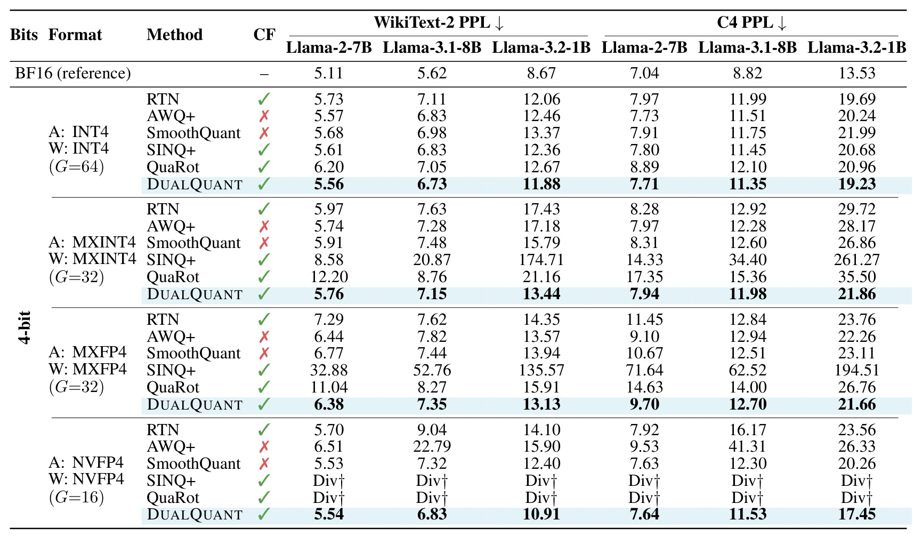
表一把三种 Llama 模型、两个语料和四个量化格式并排放在一起，带校准标记的列使读者可以区分信息预算。Llama-3.1-8B 的 INT4 WikiText-2 困惑度从 BF16 的五点六二增加到 DualQuant 的六点七三，仍有明确精度损失；相较 SmoothQuant 的六点九八和直接舍入的七点一一则更好。切换到 MXINT4，DualQuant 为七点一五，SmoothQuant 为七点四八，而 SINQ+ 升到二十点八七。NVFP4 下 DualQuant 为六点八三，明显优于直接舍入的九点零四。Llama-3.2-1B 在 NVFP4 下由直接舍入十四点一零改善到十点九一，但仍高于 BF16 的八点六七。由此可见，它并未消除四位压缩代价，而是在相同格式下使无校准方案更接近可用范围。
表中的优势也有边界。Llama-2-7B 的 NVFP4 结果是 DualQuant 五点五四、SmoothQuant 五点五三，后者略优；Llama-3.1-8B 的 MXFP4 C4 是十二点七零对十二点五一，DualQuant 同样没有领先。作者用“多数”描述与校准方法的对比更准确。表中退化项表示困惑度大于一千或格式兼容失败，不能视为所有旋转量化在所有实现上都不可行，它们反映的是论文采用的基线和格式适配方式。对工程决策而言，先确认基线尺度是否遵守同一可表示集合，再比较误差，才能区分目标函数优劣和格式实现错误两个来源。
主表采用相同数据集与相同模型内部比较，这使方法排序有明确意义；不同模型的绝对困惑度不能直接当作一个模型更聪明的证据，因为词表和训练过程不同。压缩收益最好写成每个模型相对自己半精度参考的变化，并保留需要校准的比较组。对于部署验收，专门领域术语、不同语言和长尾请求都可能改变激活范围，两个通用语料不足以证明分布变化下的稳健性。主表中已经出现的小幅落后项，值得在目标产品输入上检查是否放大，而不是只根据整体平均决定方案。
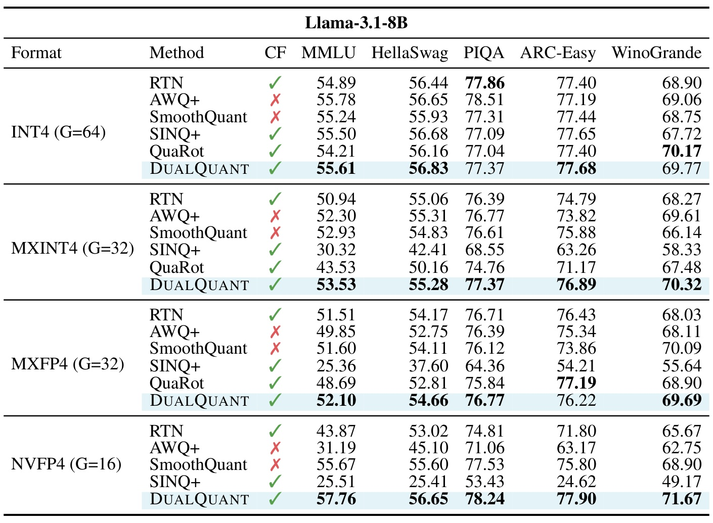
表二检验语言建模改善是否伴随任务能力保持。NVFP4 下 DualQuant 的 MMLU、HellaSwag、PIQA、ARC-Easy、WinoGrande 分别为五十七点七六、五十六点六五、七十八点二四、七十七点九零、七十一点六七，全部高于相同格式的 SmoothQuant。其中 MMLU 从五十五点六七提高到五十七点七六，是二点零九个百分点，并非二点零九倍。SINQ+ 的 MMLU 为二十五点五一，接近严重退化，说明格式失败对下游任务的影响不只是困惑度异常。MXINT4 下 DualQuant 五项指标都超过 SmoothQuant，支持列尺度和格式投影的组合有价值。
INT4 下排序更接近，且不是全面最优。AWQ+ 的 MMLU 五十五点七八略高于 DualQuant 五十五点六一，RTN 的 PIQA 七十七点八六高于七十七点三七；QuaRot 的 WinoGrande 七十点一七也高于六十九点七七。这里应将优势理解为多任务中较稳健的无校准结果，而不能只摘取胜出的三个指标来概括全部能力。表格粗体只标记每组中的无校准最好结果，浅色整行强调作者方法，它并不自动代表所有方法的全局冠军。这个视觉语义尤其容易让快速浏览者高估结论，正文需要明确保留竞争方法仍领先的任务。
零样本任务对错误类型的敏感度不同。困惑度衡量平均下一词概率，常识选择题只关心几个答案之间的相对分数，因此局部偏差可能在一类指标上不明显，却改变另一类答案。原文同时报告多任务，避免只用语言建模质量定义能力保留，但选择题仍不等价于开放式生成、工具调用或偏好满足。没有置信区间时，百分之零点几的差异应按描述性结果看待，不能把每个微小优势都解释成稳定结论。验证长期应用，还需关注错误是否集中在特定语言或高风险样本，以及同一选择题不同提示方式是否改变排序。
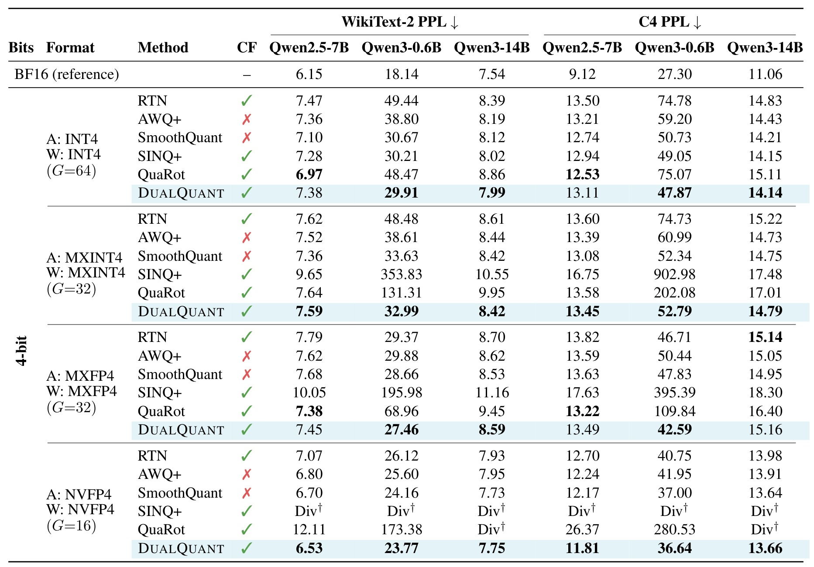
附录表七提供跨架构检验，并展示正文总体结论中最值得保留的反例。Qwen3-0.6B 的 MXFP4 WikiText-2 困惑度为二十七点四六，较 SmoothQuant 二十八点六六更好，C4 为四十二点五九，也好于四十七点八三；但 Qwen2.5-7B 的 INT4 中，DualQuant 七点三八不及 SmoothQuant 七点一零，更不及 QuaRot 六点九七。MXINT4 下 Qwen2.5-7B 同样是七点五九对 SmoothQuant 七点三六；Qwen3-14B 的若干结果与校准方法接近但未胜出。NVFP4 的 Qwen2.5-7B 是六点五三，对比 SmoothQuant 六点七零，而 Qwen3-14B 是七点七五，对比七点七三，后者略优。列出这些差异能防止把 Llama 的主表优势误写成所有模型通用结论。
小模型通常更脆弱。Qwen3-0.6B 的 BF16 WikiText-2 为十八点一四，DualQuant 在 INT4 为二十九点九一，即便优于多种无校准基线，压缩后相对原模型仍然有明显退化。没有校准数据的便利不能与达到近乎无损的质量混为一谈。模型规模、格式和语料改变时，最适合的量化方案也会改变；在特定产品中，可能应保留个别敏感层的高精度，或者先用八位路径确定质量底线。附录八位表与权重单独量化表提供辅助边界，但不能替代对四位联合推理主目标的比较。
跨架构表格提示尺度优化可能受模型层结构影响。两种家族的权重分布、归一化和参数规模不同，某种方法在一套权重里得到更好重建，不说明另一套也有相同优势。统一采用固定轮数有利于观察泛化，但缺少对落后设置的逐层定位。使用小模型的应用首先应重现低位宽后质量下降，再评估省去校准是否值得代价，不宜只强调它击败了已经退化的基线。小模型的容量余量较少，对局部误差可能更敏感，最终验收尤其要使用目标任务，而不是默认大模型上可接受的相同困惑度增量。
3.2 双尺度作用与稳定化证据
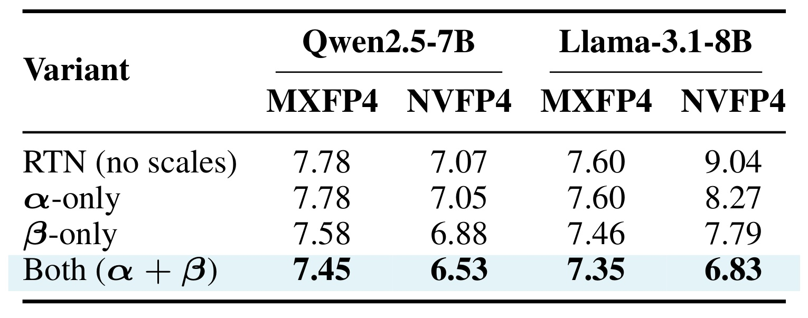
表四固定量化格式和模型，分别只使用行尺度、只使用列尺度以及同时使用两者。Llama-3.1-8B 的 NVFP4 困惑度从不使用尺度的九点零四，经过只有行尺度变成八点二七，只有列尺度变成七点七九，组合后为六点八三。两种尺度都能改善，但列尺度单独收益更大，组合得到最好的结果。MXFP4 中行尺度单独使用几乎没有收益，七点六零保持不变，列尺度改善到七点四六，组合进一步到七点三五。Qwen2.5-7B 的 NVFP4 也从七点零七到六点五三，说明这一互补性不完全局限于一套权重。
这个消融支持两种方向针对不同误差结构，却无法单独证明列尺度所有收益来自激活。列尺度改变权重网格，也改变输入，因此“只用列尺度”仍包含两个作用。行尺度在 MXFP4 上的无收益还提醒读者，格式尺度网格粒度会限制可优化自由度，不能根据连续实数最小二乘直觉预测每个格式都有相同提升。原文把两者收益称作近似相加，应保留“近似”：组合效果包括重新量化后的交互项，并非两个独立数字的严格线性求和。实际复现应同时记录权重误差、输入误差和任务质量，才能解释消融为什么在不同层或格式下出现差异。
这组设置给出诊断顺序：先确认不使用尺度的基础误差，再分别启用行和列，最后启用完整求解。若只有行尺度就大幅变化，要检查投影是否改变基线格式；若列尺度改善重建却损伤任务，应检查激活预缩放方向和输入分布。四种设置沿用同样的分组粒度，差异才可以归因到尺度机制。它们不是四套独立调优过的产品方案，因此主要帮助理解机制，不提供所有场景里的最佳配置。还需确认变换后的权重与输入使用相同约定，否则尺度恢复错误会让消融失去比较基础。
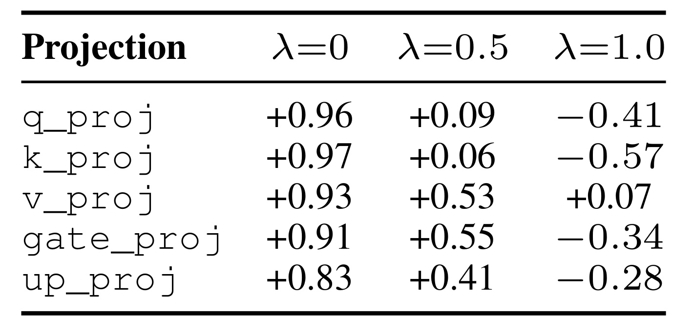
表五比较同一投影里两种方法尺度的皮尔逊相关系数。SmoothQuant 迁移强度为零、主要由权重决定时，查询和键投影与 DualQuant 的列尺度相关性为零点九六和零点九七；迁移强度为零点五时降到零点零九和零点零六；完全由激活主导时则为负零点四一和负零点五七。值投影在中间设置仍有零点五三，说明投影之间并不均匀。此处的迁移强度是 SmoothQuant 参数，不是 DualQuant 新增的待调超参数。把这一点说清楚后，相关性分析才不会被误读成作者也依赖激活调参。
这些数值不支持“权重列尺度精确估计激活统计”的强说法。它更像一个由静态权重产生、直接作用到实际输入的重参数化，不必复制数据驱动尺度才能有用。相关性变化说明信息来源不同，却不等价于哪种尺度必然精度更高；两个向量相关性很强，也可能因比例和格式投影造成不同舍入结果。表五提供机制描述，表四和表六才提供干预证据。只有把描述性关系与固定其他变量的实验区分开，才不会将经验关联包装成确定的因果保证。
相关系数对整体缩放不敏感，量化器却可能对整体缩放与截断范围敏感。向量之间的统计相似性与最终舍入表现不存在一一映射。键查询投影的中间相关性接近零，值投影仍保持明显正相关，说明离群通道不是整个块共享的单一特征。若为了减少开销强行给所有投影复用同一尺度，需要重新测试质量，不能把本文按层独立优化的结果直接赋给合并实现。另一方面，相关性是跨通道的统计概括，可能掩盖少数关键通道上的巨大偏差；定位错误仍需检查实际重建残差与输出敏感性。
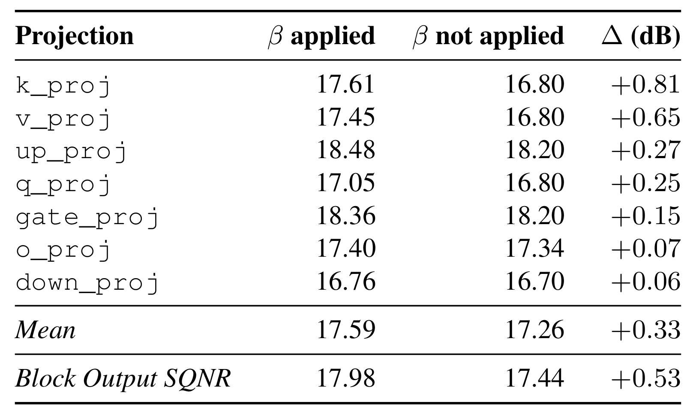
表六在 Llama-3.1-8B 第零块、INT4 分组六十四设置里固定量化权重，对比是否应用列尺度。键投影的激活信噪比由十六点八零增加到十七点六一分贝，差零点八一；值投影增加零点六五，输出投影和下投影只增加零点零七和零点零六。七类投影平均由十七点二六到十七点五九，增加零点三三分贝，块输出信噪比增加零点五三。列尺度在这个受控条件下确实有独立的激活改善，而非只是权重重建变好的副作用。这正是联合量化叙事中不能省掉的证据。
同时，收益量级较温和且对象范围有限。信噪比为对数指标，不能把零点三三分贝说成百分之三十三精度提升，也不能从一个块推广到全模型所有层。七个投影改善的差异提示，输入异常与权重结构的关联因层而异。下一步有价值的检查是深层、输出附近与长上下文输入下是否仍有同方向变化，而不是仅重复这一块的平均数。固定权重能够剥离权重量化因素，但完整层输出仍涉及输入分布和累积误差，端到端质量应该继续用困惑度或任务指标验证。
受控信噪比比较必须确认参考对象一致，否则幅值变小可能带来表面改善。固定量化权重并衡量有无列尺度时的输入误差，再观察块输出，提供了比展示离群值直方图更强的检查。对另一类模型重复实验，应保留前向输出对照，避免只在变换后的坐标空间比较数值。最终关心的是恢复尺度后输出是否准确，而不是中间张量看起来均匀。完整模型还包含残差和非线性操作，单个线性层的微小信噪比收益可能被放大或抵消，因此这些受控结果必须与最终任务一起报告。
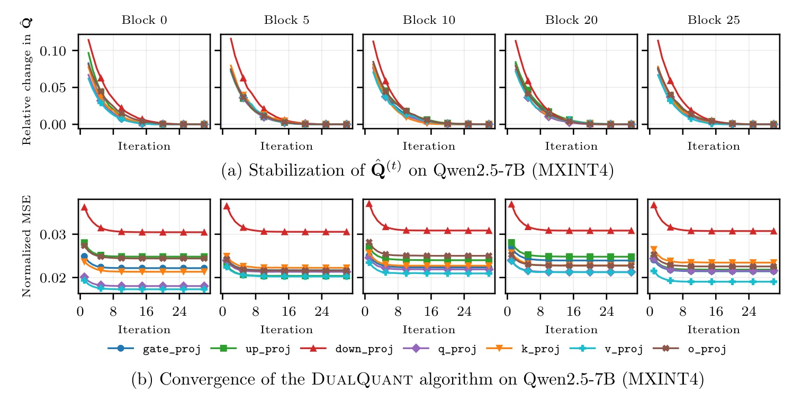
图二上排比较 Qwen2.5-7B 多个变压器块中相邻轮次量化矩阵的相对变化，下排是归一化权重均方误差。七种投影曲线分开画出，避免只看平均曲线掩盖较慢的模块；下投影的误差平台比其他投影高，并不因为都稳定就具有相同残差。上排在大约十六轮后接近零，下排大约十轮进入平台，说明该设置下网格分配很快趋于稳定，支持十五轮作为实际折中。横轴是优化轮数，不是训练步或在线请求数，因而这个收敛速度属于离线量化过程。
该图的作用是支持定理稳定化前提在所测层出现，而不是证明任何初始化或任何格式都必定在相同轮数稳定。图中重建误差下降也没有直接测激活误差，仍要和表六及任务表连接起来阅读。若工程实现将固定轮数改成提前停止，应同时监控网格变化和误差变化：仅看到误差变化变小，未必说明尺度投影没有在相邻离散点之间切换。反之，已经稳定的网格允许后续坐标更新更可解释，但驻点与全局最优仍不同。论文附录图三给出更完整的重复轨迹，正文保留图二足以讲清这一证据，不需要把相似曲线重复放满笔记。
停止阈值宜用相对变化，避免各层权重幅度不同使绝对阈值失去可比性。图中归一化误差与相邻矩阵变化使早期晚期块可以在相近坐标下比较。但整个量化块落到零时，分母会成为特殊情况，需沿用非退化条件和保护措施。不能先删掉异常块，再把剩余曲线作为所有层稳定的证据。也应记录达到阈值所需的实际量化时间，轮数少不总意味着构建快，因为层矩阵大小和格式转换开销不同。十五轮是本文实践中的折中，不应成为所有模型必须照抄的收敛常数。
3.3 真实打包推理、速度与显存
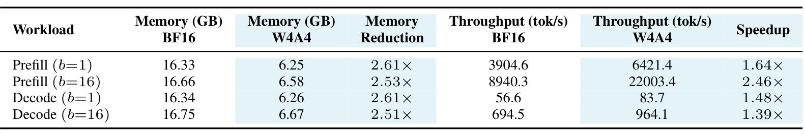
表三是与精度仿真不同的真实部署验证：Llama-3.1-8B、INT4、分组六十四、RTX 4090，权重维持打包状态，通过低位宽矩阵乘法后端执行。预填充使用八十二词元输入且不缓存键值，解码生成一百词元，键值缓存最终为一百八十二词元。单批预填充显存由十六点三三降到六点二五吉字节，缩小二点六一倍，吞吐由三千九百零四点六到六千四百二十一点四词元每秒，提高一点六四倍；十六批预填充吞吐提高二点四六倍。单批与十六批解码的速度提高分别为一点四八倍与一点三九倍。最高显存缩小和最高吞吐加速来自不同工作负载，不能将它们合成所有请求都能达到的统一指标。
真实 WikiText-2 困惑度为六点七四，与假量化六点七三只差零点零一，说明离线优化的精度在该打包实现中得到保留。但 BF16 同一运行框架为五点六一，仍比量化模型更好。后端基于 Nunchaku/SVDQuant 的 W4A4 矩阵乘法，作者增加融合列尺度的激活量化内核与便于 CUDA Graph 捕获的入口；这些实现条件是速度结果的一部分。吞吐收益既依赖压缩，也依赖减少内核启动和稳定分配。表中短序列与小规模缓存并不能代表长上下文服务，尤其缓存不量化时，随着请求长度增大，权重压缩在总显存中的占比会下降。
还需区分每请求体验与整批累计吞吐。大批量更高的词元每秒不意味着单个用户首词延迟同比下降。固定短提示之外，复杂服务还有请求排队、长度不齐和缓存管理，收益可能不同。规划容量应先复现相同长度和暖运行状态，再扩大到实际请求分布，分别报告吞吐、首词时间与解码速度，避免整体倍率遮住体验差异。真实打包路径也应检查是否与半精度基线使用相同图捕获、注意力实现与分配策略，否则额外优化会混入量化收益，影响倍率的归因。
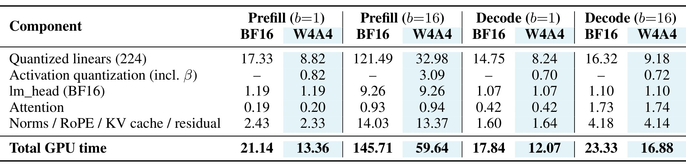
表十一解释为什么真实速度没有达到位宽比对应的四倍。十六批预填充的二百二十四个线性层时间从一百二十一点四九毫秒降到三十二点九八，约三点六八倍；但词表输出层仍需九点二六毫秒，其他归一化、旋转位置编码、残差与缓存操作仍有十三点三七毫秒，整个模型不能只享受线性层的倍率。激活量化包含列尺度相乘，十六批预填充耗时三点零九毫秒，占量化路径总时间约百分之五点二，符合作者给出的百分之四点三至六点一范围。这是“没有额外内核启动”的收益，而非尺度相乘绝对零成本。
解码十六批的线性层从十六点三二降到九点一八毫秒，收益比大批预填充小，注意力与其他操作占比也更明显。说明预填充与解码不能只用一个吞吐数字代表，面向生成式推荐或在线助手时尤其要匹配请求形态。表十一的时间来自单独插桩运行，作者提示测量开销使它的总计略大于表三直接端到端时间，因此用分解总时间反算表三吞吐会出现小差异。这不是随意舍弃不一致，而是两个口径的区别：分解表用于归因，端到端表用于最终性能比较，复现时也应分别报告。
分解表可以推导优化顺序，不能凭四位格式猜测无限收益。线性层加速后，未压缩输出层和逐元素算子占比上升，继续压缩的边际收益减小。改善解码要检查访存、内核启动与缓存读写，改善预填充则关注大矩阵效率。两种负载热点不同，融合激活内核是有效的局部手段，但完整服务仍要重新剖析。量化开销占比还受批量和输入长度影响，所以这个百分比范围应随测量设置一起报告，而不能成为所有硬件上列尺度融合成本都可以忽略的固定承诺。
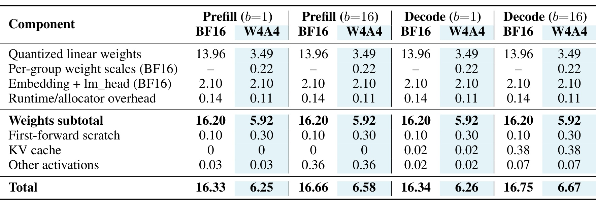
表十二把理论权重压缩与实际内存分开。被量化线性权重由十三点九六降到三点四九吉字节，接近四倍；但是分组权重尺度新增零点二二吉字节，嵌入与词表输出层维持二点一零吉字节，总权重相关占用由十六点二零降到五点九二。首次前向临时空间反而由零点一零增到零点三零，说明量化路径也有缓冲成本。单批解码的键值缓存均为零点零二吉字节，十六批解码均为零点三八，缓存没有因权重量化而压缩。这些组件加总之后，实际端到端显存才是六点二五至六点六七，而非只看三点四九的打包线性权重。
这个拆解对迁移很关键。若推荐系统包含庞大稀疏嵌入表、检索索引或长序列缓存，保持高精度的部分可能比本文占比更高，四位密集线性层的优势就会被稀释。若服务长期使用更长提示和更大缓存，应先计算固定权重、随序列增长的缓存与随批量增长的激活各占多少，而不是直接套用二点六一倍。作者报告暖运行测量重复稳定，但没有在该表给出跨软件版本、不同 GPU 或复杂并发调度的结果。因此这个真实部署是可信的可行性证据，尚不是完整生产服务性能画像。
不能仅按参数位数决定模型能否装入显存。峰值包含临时缓冲、词表张量与分配器占用，首次执行可能出现更大暂态峰值。单批预填充没有缓存，却仍需要前向空间；解码缓存较小，所以权重占主导。输入长度扩大后，缓存或词表输出可能改变排序。复现应记录峰值位置与是否包含首次运行，否则数字相近也可能口径不可比。部署容量还需要为请求波动留出空间，显存降低的实测结果是预算依据，不代表能够把剩余空间全部转换成相同比例的并发数。
4. 总结
DualQuant 的核心价值是把无校准量化从“让权重更均衡”推进到“直接最小化可观测重建误差，并尊重目标格式可表示尺度”。它以行列两个尺度增加表达能力，通过变量拆分得到闭式坐标更新，然后借助列尺度在运行时重塑激活。权重优化、激活受控实验和打包推理三个证据层相互补充：前者说明离线可求解，中间说明双尺度确有输入侧效应，后者说明优化结果不只存在于假量化脚本。没有一个层次可以单独替代其他层次。
面向大模型部署，最直接的适用条件是静态权重可得、校准样本难以获取、并且部署框架支持真正的权重与激活低位宽矩阵乘法。该方法有潜力降低模型更新时的数据依赖，让权重版本与量化版本的构建更加独立。对于推荐场景，较合适的迁移对象是生成式推荐中的密集解码器、文本或多模态编码器里的线性投影，以及需要小型语言模型参与的重排模块。推荐排序网络的稀疏特征、嵌入表、长尾数值分布和最终概率校准并没有在本文实验中验证，所以这些只是可设计实验的方向，不是已经证明的 AUC 或点击率收益。
局限至少有四个。第一，权重均方误差不包含真实输入分布，激活改善由经验关联与有限受控实验支持，没有联合输出误差最优保证。第二，收敛需要非退化和量化网格稳定前提，驻点也不是全局最优。第三，Llama 和 Qwen 内部已有反例，无校准便利不能保证每个模型、格式和任务胜过校准方法。第四，真实内核只覆盖单个模型和 INT4 路径，MX 与 NV 格式的原生硬件吞吐仍需另测。第五，短输入、小缓存和有限批量难以代表长上下文并发服务，缓存与高精度层会限制总显存收益。这些限制并不否认论文贡献，而是给出它可以被可靠迁移的边界。
后续可以沿三条路线跟进。首先复现不同深度和实际领域输入下的固定权重激活消融，记录每层信噪比以及任务质量，检查权重列结构与输入离群值的关系是否保持。其次移植到真正支持目标块格式的硬件与内核，分别记录打包布局、尺度舍入、格式溢出和端到端速度，避免把假量化效果当成硬件能力。最后在生成式推荐或重排场景中按实际请求长度、批量、缓存预算评测，并同时报告离线排序指标、概率校准误差和尾部请求时延。无校准方案的价值应以构建成本、质量损失和实际服务预算共同衡量，不能只保留一个最大的吞吐倍率。
若准备动手，优先检验逆尺度方向、投影集合、零范数处理和融合内核是否与原算法一致，再比较表一与表三的精度差距。最容易造成错误结论的两处是把静态权重目标说成完整联合目标，以及把 RTX 4090 的 INT4 实现说成 MX 或 NV 原生性能。把这两点保持清楚，就能将论文作为可检验的部署设计，而不是无法复现的压缩口号。
对这项工作的长期评价，还应观察公开实现如何覆盖更多硬件，以及后续版本是否补充跨层激活统计。最有意义的进展是让相同的离线权重构建方法在不同服务分布中保留质量，并用清楚的测量口径兑现实际收益，而不只是继续提高某个小块的误差倍率。